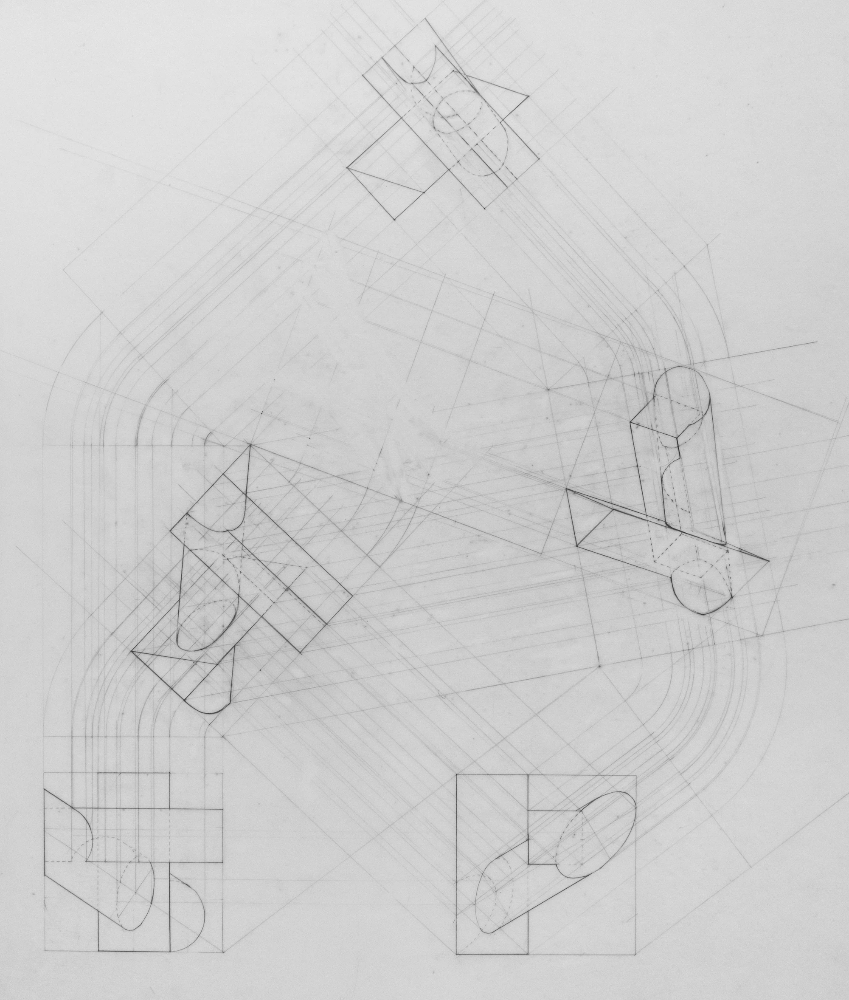

ARCH21-ST-07 STATES OF EXCEPTION
ARCH12-ST-03 SPACES FOR MEDIATION
Thesis WIP:
Sadnoise debuted on January 10th 2019 with the release of The Sculpture Garden. I had always been interested in music in every medium, tape to vinyl to cd to mp3, we always had everything around in the house, and my interaction with it was always connected to the medium and the physicality of how the music was played. I have vivid memories of watching Kanye music videos on my dads ipod classic when we would take the train in Arizona on my summer vacations. And bugging him to sit down and burn a mixtape for me every time I visit. Opening the side of the mac tower when I wasn't supposed to. Digging through his CD collections to find my new alarm for the morning. Collecting the broken cassette players from my grandmother's house. Buying the first CD I would ever own, the Tron Legacy soundtrack by Daft Punk, which I played on repeat for the following few months. Spending all night on my Dell laptop underneath the covers trying to fix the audio driver. I had a strong relationship with Pandora in my early tweenage years. My dad and stepmom would do a lot of computer work, and listen to Pandora's "chill out" playlist, which was my real gateway into the world of electronic music through all the classic chillwave artists like Tycho and Bonobo. I was entranced by the sound design and textural elements in these tracks. All other music at the time almost sounded completely natural, in the way that a field recording would, compared to the depth and inorganic, other-worldly sounds in these tracks. I had tried to make my own music at the time, as SpaceKitties with iphone apps and free online software, that actually ended up pretty housey. It wasn't until later when I torrented FL studio and began trying to make some sort of "experimental" project. I had just begun actually going out to a lot of punk/hardcore stuff, so the idea that music could be physically visceral as well as sound that way was eye opening to me. The disorientation and newness from these shows introduces the dissociative and disorienting concepts that influences some tracks on this release as well as others. The sculpture garden was made in FL Studio using mostly samples and a bunch of random midi timing and effects. Playing around with time was something that I think was really influential, as it led me to dive really deep into granular synthesis later on. I was using a lot of timestretch and looping techniques in FL studio for the release, but the tracks were still very tame. The tame tracks on this release fall under the genres of vaporwave, trap and breakbeat, which was a lot of what I was listening to at the time. My next release Eden was more experimental, exploring the same techniques.
In high school I was pretty isolated in the world of the music I liked, I had gone out a lot, to The Grove, H0L0, Market Hotel and The Glove when it was still there, those were mainly the places I frequented, I mostly went alone, and tried to meet people. But it would always end up that I see the same people over and over and never talk to them. I think a lot or some of that feeling of isolation led into the ideas and aesthetics of sadnoise at the time, but it was always also lighthearted and influenced by my more social life and my life online.
The internet has always been a big part of the idea behind sadnoise. The idea of being deeply embedded in the internet, sleeping on beds of ones and zeros. The digital sound has become something I strived to convey within my music early on, whether that be with sampling or with synthesis and sound design. I grew up surrounded by computers and technology from a very early age and was always staring into some form of screen or drawn to buttons and knobs on some device and one of the earliest memories I have is of my mothers VHS camera playing back a video she had just recorded. The idea of the internet being infinite played with my perception of time and data. Sometime around 2018 I became very obsessed with archiving and documenting things well, and putting out as much content on the internet as a cloud, as a personal archive and also to build my relationship with this infinite void that was the internet. Most of this content was through Instagram and Youtube. Sampling became a big part of
Sometime in 2019 I eventually came across modular synthesis. I didn't get to see it in person but I remember being really into the piece by Kevin Beasley: A View of a Landscape, Where he had rigid up a cotton refinery machine into a clear box with microphones in one room, and in the other room you just heard the sound from the box, processed by his modular synth. This idea and way of processing audio was super interesting to me because I was very uninterested in the timeline or linearity of a lot of audio programs on my computer. The idea that I could design sound in a modular way, and introduce feedback systems easier with more control changed everything. That and just the beauty of a modular synth with all the knobs and lights, and the interaction with hardware as a completely different experience than looking at a screen. Knobs had individual functions and you could turn multiple at once with you hands. But I couldn't afford a modular synth, so I dove into VCV Rack which was a free downloadable modular synth program and started composing generative patches there. I was instantly hooked on this way of patching and creating systems for soundscape design and recorded a few released with patches from VCV Rack. My patches were often big and my computer can't really handle them at the time so a lot of the recorded patches at the time had digital clip sounds, aliasing and choppiness, so i've taken a lot of these recordings off the internet, but this was a big explorative time for sadnoise in terms of sound design.
Sometime around 2020 I had been reaching out to a lot of people via Instagram for advice on how to started and build modular synth, and to my surprise the community was extremely welcoming and helpful and have me lots of resources and guidance as to how to start my journey into a hardware version of a modular synthesizer. One of my internet friends at the time had been downsizing their modular system and offered to send me a case and a few modules (for free!!!). This was a huge step for me and fuled the rabbit hole that is modular. I still use this case to this day and its had so many different configurations. At the time I just had the Rene sequencer, Plaits, Cara (which was a clone of Mutable Instruments Marbles), Stages, and an output module, which was really all I needed to get goin. I had already been into Orca which was a live code based computer language for sending midi information so I had bought a midi to cv module for using my modular with orca.
Sadnoise had just been about weird glitchy, ambient and digital sounding sound design for a long time up until 2021 when I took the class Spatial Audio at RISD in the Studio for Research in Sound and Technology. This class has been the first time I really thought about my sound design in a very literal spatial way, I was able to explore panning my sounds around the 24.5 speaker system and creating new spaces and impossible environments by layering and positioning sound in space. This led to a lot of exploration in sound design for sound that could be perceived as organic or digital, or alien in nature. I became very interested in that conversation between organic and digital sounds and there was already a very organic nature to the generative patches i had been working on previously in terms of timing and randomness. The experiments from this class ended up being archived as the release Hyperencoder, named after the Room Encoder IEM plugin I used mostly to position sound in space. These recordings are binaural. Although I didn't really do that much spatial work after that class (because who has a 24.5 speaker system in their house to listen to it if I did ), The class heavily influenced how I composed my work and how I performed my work live. I began to use a lot of space in timing and play the acoustic qualities of the spaces I would perform in. Using these techniques aided to disorient myself and my audience during performances, and helped me with this idea of non-linear composition for my live sets.
I want to continue exploring the idea of maximal and impossible spaces. I want to go about this project thinking of it in terms of the idea of physical modeling where I’m taking sounds from the modular or from field recordings and manipulating them to sound organic but unrecognizable, and then mapping them in space. I want one of the main sources to be the soma ether EMF Mic, as I’ve been getting very static noise sounds from it which I really enjoy, but I'm not sure how to tie this into my concept.
In 2022 I dove into the world of Ciat Lonbarde. I was interested in the way that Peter Blasser designed his circuits. Peters circuits are heavily influenced by organic systems, nature and geography. Some of his PCBS are directly designed after places from his hometown or places that hes traveled. This attention for nature and the organic during the design process of building a synthesizer interested me as my work started to be influenced by similar concepts around the same time that I discovered his circuits. I started building his Rollz5 paper circuits. There was something about building circuits on paper as my introduction to soldering and DIY synths that gave me a deeper connection with the circuit and the sounds it would make. The process of building the circuits felt very transparent and organic. The rollz circuits made sputtering feedbacked pulse rhythms, which sounded like digital birds to me. At the time I had been recording a score for someone's film, most of the tracks were using SoundGrain, a granular synthesis program for my computer. The digital and organic ambiance created by these tracks began to tell the story of a Data Bird surfing the internet. This story unraveled naturally through the process of sound design and was the first time the technology or sound told me a story. It had been a conversation with me and the circuits. This release was the classically "ambient" album. I wanted to explore what ambiance in music meant to me, as it had been defined by ambient music I had been listening to at the time, but didn't necessarily need to be held within those boundaries. cyb sym int cav dov is a response to the story of the data bird, and a further exploration of my definition of ambiance. The ambiance of a computer would be completely different in nature than the ambiance of nature.
What is ambiance?
Ambiance is the state of sound and space around you. Ambiance is deep listening, connecting yourself to all sounds at all times, It’s a state of awareness. Ambiance is generative, it can morph and change with the people or objects that may interrupt a physical or sonic space, but it is also a conversation with these objects and the space they Infiltrate. It sits around us always, a room designed to lack character has no ambiance. Ambiance takes up space, it’s a lone object in itself that is often under explored. Ambiance is both silence and noise, a direct the relationship between meditation and scattered thoughts. The same way thunderstorms hold so much weight but can be so calming.
To say I produce ambient noise music is an oxymoron by my definition of ambient, but I often find myself using both because of people's association with ambient as calmness. The understanding of ambience as a mutation of descriptors of emotion you feel in an environment or as a result of hearing a certain sound has led me to think about the way I curate sonic soundscapes in conversation with ambiance from a sound and architectural standpoint. My practice most recently was called masturbatory in nature in relation to my almost spiritual connection to fast-food synth content on the internet has made me rethink ambiance in a new light. Ive always explored my sound design thru sitting at my synth day to day, most often alone, the practice has become a ritual of sound exploration, mundane, selfish in a way. This ritual practice has embedded its sonic roots within me, and when I perform live, the idea of the body, feeling sound, and manipulating space with sound and vice versa can be meditative and visceral at the same time, and helped me to explore how I want to define ambiance in my work.
Fast forward to 2023, The ER301 sound computer entered my eurorack system, and completely changed the way I patched. The ER301 completed the Monome/I2C environment and was a way for me to treat my eurorack almost like the Buchla 200e system, in that I was able to now recall most of any patch I had had done with I2C from teletype or much easier with analog patches. It also let me perform a lot of the granular synthesis processes I had been interested in with ease. Modular within modular. Being able to recall and record my patches onto the micro sd was a big game changer for me. (I invested a lot into getting this module but it was completely worth it, and I have used it in every single patch since I got it.)
February 12th, 2023
Today I was thinking about the er301 sound computer module for my eurorack modular synthesizer. I spent a lot of money on it but I feel as though its a good investment for my personal setup. It allows for both general utility and sound design in a way none of my other modules do. It acts as a DAC and ACD (although outputs are ac coupled and only for audio. It will pair very nicely with Monome Teletype.
March 1st, 2023
I think granular synthesis is a good form of synthesis to relate sound and manipulate sound with the idea of the organic in mind. In simple words, granular synthesis is a form of audio synthesis that operates on the microsound time scale, meaning less than a second. You start with a source audio and various synthesis techniques can be used to chop this audio up into small samples or grains that make up the audio. These individual grains can then be repeated over and over as you slowly scan through the set of grains to stretch the audio out and manipulate the audio as if it were putty or dough that you're stretching across a surface. You can change the size of the grains, and overlap the grains to create unique soundscapes and completely rework the original audio.
I'm drawn to this form of experimenting with audio in this project in particular because as a concept, it's related to nature, generation and generativeness, an initial state of being, and evolution over time.
Granular synthesis reminds me of grains of sand. The wind blows grains of sand in the wind to create a new portrait in the ground. recorded audio is a trim and cut/sample of that moment in time
representing sound visually, sand and dust
of relation to minimalism and minimalistic moves within composition
Granular synthesis reminds me of evolution. You start with a set of genes, that is your audio, your initial state, first generation, and as you stretch that state, that initial audio over time, the longer the audio is stretched, the audio adapts to itself and has to inevitably evolve into a new form of being.
Granular synthesis reminds me of raindrops in a storm. Microsound in repetition as time stretches is essentially a ritual practice as the longer the audio is stretched the more the repetition of elements of the audio and the longer the ritual practice.
Sample Manipulation became a huge part of sadnoise. I'm interested in the intersection of memes and the early internet, transforming and celebrating the cringe and vulnerability that comes with small internet footprints, weather it be a meme with 100 views or an ASMR video from someone with 20 subscribers, there's something extremely genuine, or overly synthetic about this content, much like the organic and synthetic nature of how I make music, the instruments I use, and the spaces I perform in. I also sometimes sample fetish content for the same reasons. The edges of early internet, where something as obscure as balloon fetish content had to be curated, and you had to order DVDs, for a high price too. And the videos had lighting technicians probably, and the scene had to be set. There's something so preformative about it, it's so fun and experimental, but professionally documented, for the strangers of the world wide web.
Serge modular and characters project:
For the final project I want to focus on the idea of maximality and characters. I really enjoy building up textures over time with the serge and then sort of taming them to have more control over the patch, or even just the volume of specific elements of the patch, this way I can really perform the patch. I want to focus on introducing a lot more control and space into my patching techniques in order to have a lot of elements stack but be in their own space. Ways of doing this may include creating signals in very dissected frequency ranges to give their air to breath in between. Or separate more percussive notes from other sounds. I'm also in some ways inspired by the idea of feedback, cybernetics and AI that La Synthèse Humaine talks about on his YouTube channel, and I think that language of patching will help me create characters in a more controlled random way.
As far as performance, I want to perform the patch live, which would require me to patch a few days in advance. I would like to use max just to rut audio directly to specific speakers in the spatial array. I was also thinking of routing audio to video ins of CRT TV’s to get scan lines for that data matrix style look , and having different audio from the patch go between the two TVs, to further expand the idea of characters and conversation, with visual oscillations.
Album Releases:
RITUAL is the first release in a series of Albums I'll be releasing every month for a year as part of my thesis. This series focuses on ideas of sound as ritual practice along with themes of architecture, dreams, land acknowledgment, academia, indigenous practices, sexuality, love and relationships and the internet. The purpose of this series is to really dive into the idea of recorded improvisation as a ritual practice and generative/algorithmic systems as a connection to nature and the organic/organism. Sadnoise has always been as much about the conversation between the internet and nature or the "absence" of the internet as it has been about the interaction between produced or manipulated sound and physical space.
The RITUAL release is a collection of home patches on my analog synth and with my computer. These rituals archive the process of patching in my room as a form of ritual sonic practice.
SYSTEMS is an album archiving written and sonic explorations of various analog and digital systems that I use during the process of designing sound, as an attempt to demystify some synth esoteria.
VOYAGER is an album experimenting with the ideas of outer space, lack of air, vessels of suction and continuous drifting. A soundtrack for the internet as open space with no boundaries.